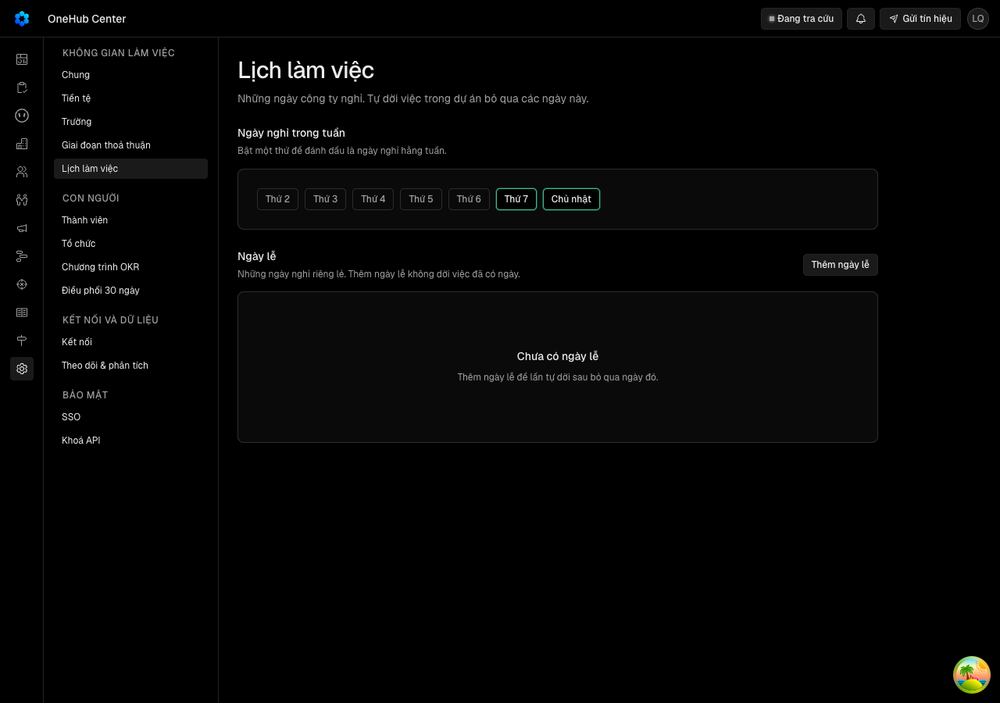
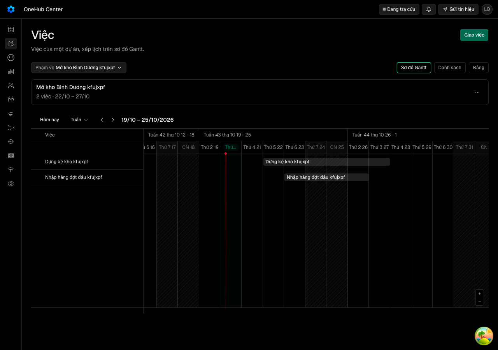
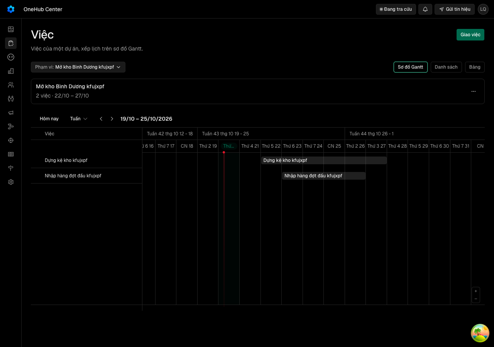
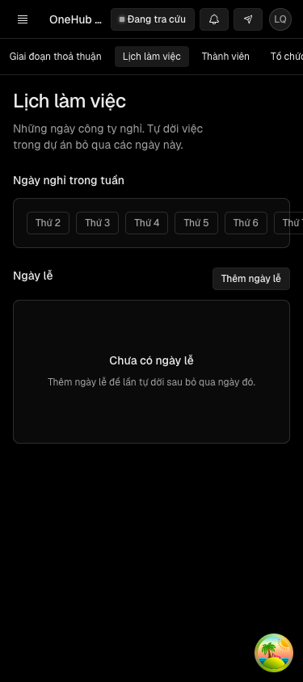
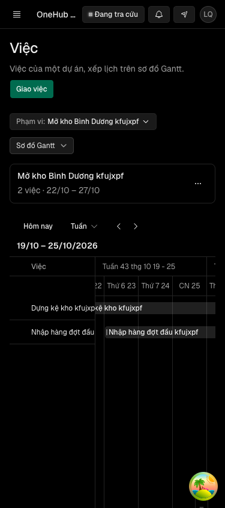

Lịch làm việc chọn đủ bảy ngày vẫn giữ đúng như chọn, và dự án đủ 300 việc vẫn sửa được mốc và phụ thuộc
Vì sao làm
Hàng DA12 của docs/plan/lo-trinh-viec-du-an.json; chủ kho duyệt Cổng Đáng («build») ở thẻ khởi tạo đợt viec-du-an-kho-tai-lieu 19/10/2026. Gộp ba mục ngoài hợp đồng của DA4 mà chủ kho chọn «mở hợp đồng mới» ở Cổng Bằng chứng 18/10: Ngoài-3 và Ngoài-9 — quản trị bỏ chọn hết ngày nghỉ trong tuần, máy báo đã lưu, nhưng Thứ Bảy và Chủ nhật bật lại; Ngoài-8 — dự án đủ 300 việc thì không thêm, sửa, xoá được mốc và không thêm, gỡ được phụ thuộc. Hạng T3 vì thêm một cột ở packages/db/prisma.
Đã hứa
- AC-1 — Given lịch đang nghỉ Thứ Bảy, Chủ nhật, When chủ hay quản trị bỏ chọn hết ngày nghỉ trong tuần, Then lịch đọc
- AC-2 — Given lịch chưa từng được đặt — chưa có cài đặt chung, hoặc có cài đặt từ trước vòng này với ô ngày nghỉ trống
- AC-3 — Given lịch làm cả tuần và hai việc A (hạn Thứ Sáu 23/10) và B phải chờ A trong một dự án, When A dời hạn làm B
- AC-4 — Given quản trị vừa đổi lịch trên màn Cài đặt, When bấm Hoàn tác trên thông báo «Đã lưu», Then lịch về đúng
- AC-5 — Given dự án đủ 300 việc, When người dùng thêm, sửa, xoá một mốc, Then thao tác thành công và lịch sử dự án
- AC-6 — Given dự án đủ 300 việc, When người giao hay người thực hiện thêm hay gỡ phụ thuộc giữa hai việc của dự án,
- AC-7 — Given dự án đủ 300 việc, When tạo việc mới trong dự án, thêm việc con cho một việc của dự án, hay chuyển một
- AC-8 — Given lịch làm cả tuần, When quản trị mở lại Cài đặt › Lịch làm việc và mở Gantt của một dự án có việc qua
- AC-9 — Given vòng xong, When người đọc `docs/api.md` và `CONTEXT.md`, Then hai tệp nói: lịch chưa đặt thì nghỉ Thứ
Thiết kế
docs/superpowers/specs/2026-10-19-va-gantt-lich-bay-ngay-design.md
Quyết định
- 2026-10-19 · Máy · approach · S1 — Lịch «không nghỉ ngày nào» lưu bằng một cột cờ mới ngayNghiTuanDaDat: chưa đặt thì theo mặc định Thứ Bảy, Chủ nhật, đã đặt thì đọc đúng mảng kể cả rỗng.Mảng rỗng hôm nay vừa là «chưa đặt» vừa là «không nghỉ»; cột cờ tách hai nghĩa mà mặc định vẫn ở một chỗ (LICH_LAM_VIEC.ngayNghiTuanMacDinh) và bài dg_lich đã ký của DA4 giữ xanh.
- 2026-10-19 · Máy · approach · S1 — Tách lời kiểm dự án: docDuAnMo chỉ kiểm dự án còn mở cho mốc và phụ thuộc; lời kiểm mới docDuAnNhanViec thêm trần 300 cho tạo việc, việc con và chuyển việc vào.Trần 300 nằm trong docDuAnMo mà mọi thao tác mốc, phụ thuộc đều gọi (packages/db/src/du-an-ghi.ts dòng 148, 193, 220, 289, 361), nên khoá oan chúng.
- 2026-10-19 · Máy · descope · S1 — Không gom hạt giống ô chọn «Dự án» bị cắt ở khổ 375 vào DA12; xin giám sát mở hàng riêng có mốc.Luật 23 của đợt: gom nếu cùng vùng; bản sửa nằm ở biến thể Combobox dùng chung của packages/ui, không ở lịch, dự án hay Gantt.
- 2026-10-19 · Máy · descope · S1 — bỏ design-pass — vòng không đổi mã màn nào; màn Cài đặt và Gantt đã vẽ đúng theo lịch API trả, chỉ dữ liệu sai.lich-lam-viec.tsx vẽ bảy ô theo du.ngayNghiTuan và gantt-du-an.tsx chuyển ngayNghiTuan sang weekendDays; gantt-lib chỉ dùng mặc định khi undefined.
- 2026-10-19 · Máy · descope · S1 — bỏ đặc-tả-UX — vòng không đổi cấu trúc, trạng thái hay chữ của màn nào.Hai lỗi nằm ở lớp đọc ghi dữ liệu (packages/db/src/du-an.ts, viec-ghi.ts); design doc mục «Cách làm đã chọn» nói màn không đổi mã.
- 2026-10-19 · Máy · descope · S1 — Không cho chọn đủ bảy ngày nghỉ; hợp đồng datNgayNghiTuan giữ trần sáu thứ.Lịch không còn ngày làm nào thì ngayLamKe ném lỗi sau 3660 ngày tìm (packages/db/src/lich-lam-viec.ts); câu giao chỉ đòi «chọn đủ bảy ngày» làm việc.
- 2026-10-19 · Máy · descope · S1 — Không khoá dự án khi đếm trần 300 ở taoViec; hai người cùng thêm việc thứ 300 có thể vượt trần một việc.Lỗi của hàng là trần khoá oan mốc, phụ thuộc; khoá cạnh tranh là việc khác của cùng trần, đã có từ DA4.
- 2026-10-19 · Máy · approach · S1 — Lịch «không nghỉ ngày nào» lưu bằng cột cờ khongNghiTuan (mặc định false), chỉ bật khi quản trị bỏ chọn hết; chưa bật thì giữ luật đọc hôm nay.Phản biện P0: kho test dùng chung cho mọi tệp một lượt, và bài dg_lich đã ký ghi lịch qua API rồi chỉ trả lại cột mảng; cờ «đã đặt» sẽ bị nó để lại true kèm mảng rỗng, còn cờ «không nghỉ» thì nó không bao giờ bật (gap-probe.md P0-1).
- 2026-10-19 · Máy · approach · S1 — Lời kiểm thêm việc docDuAnNhanViec khoá hàng duAn (SELECT … FOR UPDATE) trước khi đếm, để hai người cùng thêm việc thứ 300 thì người sau nhận lời trần.Phản biện P0: khoá nằm gọn trong lời kiểm chỉ ba đường thêm việc vào dự án gọi, nên lối «không khoá» không chết như dòng cũ ghi; giữ trần đúng là phần của luật DU_AN.viecToiDa (gap-probe.md P0-2).
- 2026-10-19 · Người · seal · gate1 —
- 2026-10-19 · Máy · approach · S2 — Bảy task chạy tuần tự trong phiên chính, không tách worktree song song.Task 1 và Task 3 cùng sửa gói @crm/db và cùng chạy trong một lượt bun run test (kho test dùng chung), còn răng màn và răng đột biến cần mã của cả hai; gộp nhánh song song tốn hơn phần thời gian tiết kiệm.
- 2026-10-19 · Máy · fix · S3 — E8b đo Hoàn tác trên màn bằng hai chuyển kề — Thứ Bảy rồi Hoàn tác về làm cả tuần, làm cả tuần rồi Hoàn tác về Chủ nhật — thay cho chuyển thẳng giữa làm cả tuần và nghỉ Thứ Bảy, Chủ nhật.Mỗi lần bấm một ô trên màn Cài đặt chỉ đổi một thứ và Hoàn tác trả về giá trị ngay trước lần lưu đó (lich-lam-viec.tsx, luuTuan), nên chuyển thẳng hai thứ không có trên màn; hai chuyển kề vẫn đi qua cả hai chiều của cờ, còn chuyển thẳng đo ở E4 lớp API.
Bằng chứng
Các eval
| Eval | Tiêu chí | Loại | Verdict | run_id | verified_at |
|---|---|---|---|---|---|
| E1 | AC-1 | test | PASS | minted-va-gantt-lich-bay-ngay-E1-r1 | 2026-10-19T22:46:29Z |
| E2 | AC-2 | test | PASS | mvfujvr3oqsy | 2026-10-19T22:46:29Z |
| E2b | AC-2 | test | PASS | minted-va-gantt-lich-bay-ngay-E2b-r1 | 2026-10-19T22:46:29Z |
| E3 | AC-3 | test | PASS | minted-va-gantt-lich-bay-ngay-E3-r1 | 2026-10-19T22:46:29Z |
| E3b | AC-3 | test | PASS | minted-va-gantt-lich-bay-ngay-E3b-r1 | 2026-10-19T22:46:29Z |
| E4 | AC-4 | test | PASS | minted-va-gantt-lich-bay-ngay-E4-r1 | 2026-10-19T22:46:29Z |
| E5 | AC-5 | test | PASS | minted-va-gantt-lich-bay-ngay-E5-r1 | 2026-10-19T22:46:29Z |
| E6 | AC-6 | test | PASS | minted-va-gantt-lich-bay-ngay-E6-r1 | 2026-10-19T22:46:29Z |
| E6b | AC-7 | test | PASS | minted-va-gantt-lich-bay-ngay-E6b-r1 | 2026-10-19T22:46:29Z |
| E7 | AC-1 | script | PASS | minted-va-gantt-lich-bay-ngay-E7-r1 | 2026-10-19T22:46:29Z |
| E8 | AC-8 | ui-check | PASS | minted-va-gantt-lich-bay-ngay-E8-r1 | 2026-10-19T22:46:29Z |
| E8b | AC-4 | ui-check | PASS | minted-va-gantt-lich-bay-ngay-E8b-r1 | 2026-10-19T22:46:29Z |
| E9 | AC-9 | judgment | PENDING-JUDGMENT | — | — |
Chi tiết từng eval
PASS E1 · test
AC-1: Given lịch đang nghỉ Thứ Bảy, Chủ nhật, When chủ hay quản trị bỏ chọn hết ngày nghỉ trong tuần, Then lịch đọc
test-run: dropped crm_mvfujvlgngpw_test __EXIT=0
PASS E2 · test
AC-2: Given lịch chưa từng được đặt — chưa có cài đặt chung, hoặc có cài đặt từ trước vòng này với ô ngày nghỉ trống
test-run: dropped crm_mvfujvr3oqsy_test __EXIT=0
PASS E2b · test
AC-2: Given lịch chưa từng được đặt — chưa có cài đặt chung, hoặc có cài đặt từ trước vòng này với ô ngày nghỉ trống
test-run: dropped crm_mvfujvoqjuhd_test __EXIT=0
PASS E3 · test
AC-3: Given lịch làm cả tuần và hai việc A (hạn Thứ Sáu 23/10) và B phải chờ A trong một dự án, When A dời hạn làm B
test-run: dropped crm_mvfujvlgngpw_test __EXIT=0
PASS E3b · test
AC-3: Given lịch làm cả tuần và hai việc A (hạn Thứ Sáu 23/10) và B phải chờ A trong một dự án, When A dời hạn làm B
Ran 1 test across 1 file. [781.00ms] __EXIT=0
PASS E4 · test
AC-4: Given quản trị vừa đổi lịch trên màn Cài đặt, When bấm Hoàn tác trên thông báo «Đã lưu», Then lịch về đúng
test-run: dropped crm_mvfujvlgngpw_test __EXIT=0
PASS E5 · test
AC-5: Given dự án đủ 300 việc, When người dùng thêm, sửa, xoá một mốc, Then thao tác thành công và lịch sử dự án
test-run: dropped crm_mvfujvo3mz31_test __EXIT=0
PASS E6 · test
AC-6: Given dự án đủ 300 việc, When người giao hay người thực hiện thêm hay gỡ phụ thuộc giữa hai việc của dự án,
test-run: dropped crm_mvfujvo3mz31_test __EXIT=0
PASS E6b · test
AC-7: Given dự án đủ 300 việc, When tạo việc mới trong dự án, thêm việc con cho một việc của dự án, hay chuyển một
test-run: dropped crm_mvfujvo3mz31_test __EXIT=0
PASS E7 · script
AC-1: Given lịch đang nghỉ Thứ Bảy, Chủ nhật, When chủ hay quản trị bỏ chọn hết ngày nghỉ trong tuần, Then lịch đọc
vg dot bien: 7/7 dot bien chet __EXIT=0
PASS E8 · ui-check
AC-8: Given lịch làm cả tuần, When quản trị mở lại Cài đặt › Lịch làm việc và mở Gantt của một dự án có việc qua






Frame da luu (goc + ban sao E8-stepN): vg-lich-t7cn-1280.png = E8-step1.png; vg-gantt-t7cn-1280.png = E8-step2.png; vg-lich-rong-1280.png = E8-step3.png; vg-gantt-rong-1280.png = E8-step4.png; vg-lich-rong-375.png = E8-step5.png; vg-gantt-rong-375.png = E8-step6.png (trong _acceptance/va-gantt-lich-bay-ngay/evidence/). Con co vg-hoan-tac-ve-rong-1280.png, vg-hoan-tac-ve-co-nghi-1280.png (buoc 4, khong thuoc Expected). Network: driver la script man.mjs (khong co tool doc network) nen n-a (driver); khong ghi E8-network.txt.
PASS E8b · ui-check
AC-4: Given quản trị vừa đổi lịch trên màn Cài đặt, When bấm Hoàn tác trên thông báo «Đã lưu», Then lịch về đúng
Frame da luu (capture trong man.mjs, 1280): vg-hoan-tac-ve-rong-1280.png (= E8b-step1.png), vg-hoan-tac-ve-co-nghi-1280.png (= E8b-step2.png), kem .html cung ten, trong _acceptance/va-gantt-lich-bay-ngay/evidence/. Network: driver la script Playwright cua man.mjs, khong co read_network_requests; E8b-network.txt ghi chu 'n-a (driver)'. Dev server do phien do tu dung va tu don (khong server nao con chay do toi start).
PENDING-JUDGMENT E9 · judgment
AC-9: Given vòng xong, When người đọc `docs/api.md` và `CONTEXT.md`, Then hai tệp nói: lịch chưa đặt thì nghỉ Thứ
Phán đoán: Đề xuất PASS của máy, chưa phải kết luận. Hợp đồng là T3 nên mọi mục judgment đều chờ người xác nhận trực tiếp ở Cổng 2.
Vòng verify
- Round 1: mọi eval máy xanh; E9 (judgment, T3) chờ người xác nhận ở Cổng 2. Chưa có vòng nào bị trả về.
Tài nguyên
| Khối | Tác tử | Token đầu ra |
|---|---|---|
| S4 round 1 | 25 | 47.609 |
1 lượt chấm · tổng 47.609 token
Giới hạn và ngoài hợp đồng
- Chọn đủ bảy ngày nghỉ: hợp đồng `datNgayNghiTuan` giữ trần sáu thứ.
- Câu báo mới trên màn Cài đặt khi không nghỉ ngày nào; màn và Gantt không đổi mã.
- Ô chọn «Dự án» bị cắt ở khổ 375 (hạt giống `docs/plan/2026-10-19-hat-giong-o-chon-du-an-375.md`) — hàng riêng.
- Các mục Known limits khác của DA4 (Ngoài-4, 5, 10, 11).
Giao
chưa gộp vào onehub (nhánh production kho khai)
Giá trị
- Câu hỏi phép đo trả lời: quản trị đặt lịch làm cả bảy ngày có giữ được không; dự án đã đủ 300 việc có còn sửa được mốc và phụ thuộc không. — chưa đo
- Kết quả nào là SỐNG: bỏ chọn hết ngày nghỉ rồi tải lại vẫn thấy không ngày nào nghỉ, Gantt không bỏ qua Thứ Bảy, Chủ nhật; ở dự án đủ 300 việc vẫn thêm, sửa, xoá mốc và gỡ phụ thuộc được, câu báo lỗi chỉ hiện khi thêm việc thứ 301. — chưa đo
- Kết quả nào là CHẾT: sau khi lưu, Thứ Bảy và Chủ nhật bật lại; hoặc dự án đủ 300 việc vẫn chặn thao tác mốc hay phụ thuộc. — chưa đo
- Timebox: một vòng (10 giờ máy), mốc 24/10/2026. — chưa đo